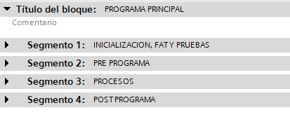
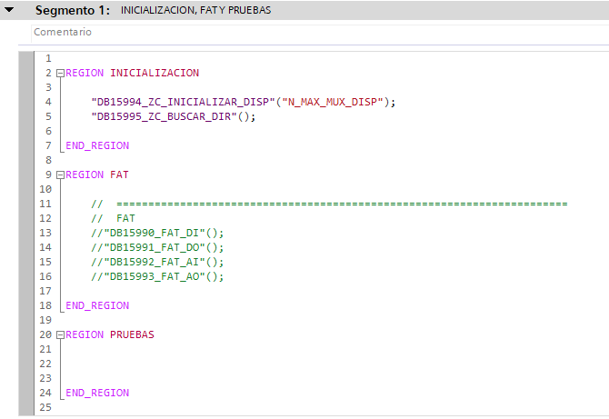
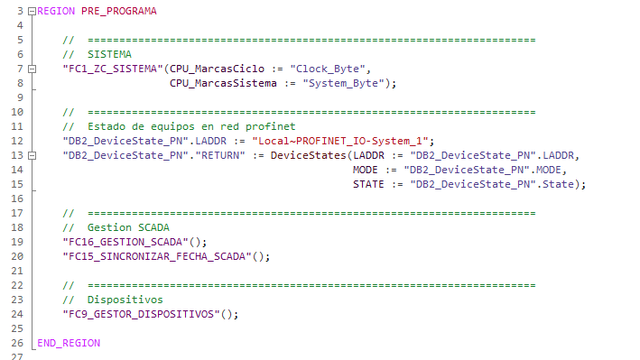
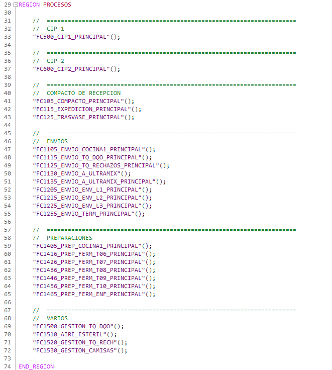
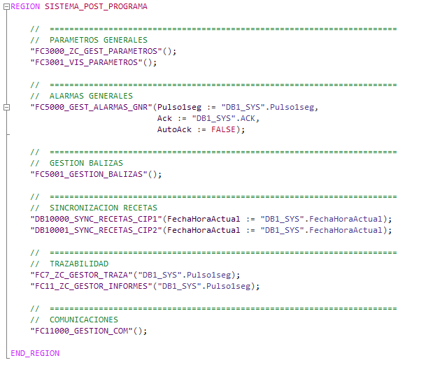

Organización de bloques en OB1
La organización de los programas del área de alimentación siempre llevara el siguiente orden de llamadas a bloques y funciones. Para ello, se crearán 4 segmentos en el OB1_MAIN en SCL

A continuación, se detallará el orden de llamadas de un programa base.
- OB1_MAIN (Se generan 4 segmentos en SCL)
- Segmento 1 (Inicialización, FAT y pruebas)
- FB15994_ZC_INICIALIZAR_DISP
- FB15995_ZC_BUSCAR_DIR
- FB15990_ZC_FAT_DI
- FB15991_ZC_FAT_DO
- FB15992_ZC_FAT_AI
- FB15993_ZC_FAT_AO
- Bloques, funciones, código para pruebas.
- Segmento 2 (Pre-programa)
- FC1_SISTEMA
- DEVICESTATES (Opcional)
- GESTION SCADAS, HMI, ETC. (Opcional)
- FC9_GESTOR_DISPOSITIVOS
- Configuración multiplexado
- FC2000_ZC_ED
- FC2001_ZC_EA
- FC2005_ZC_SD (Opcional)
- FC2006_ZC_SA
- FC2010_ZC_V
- FC2015_ZC_M
- FC2016_ZC_M_VF
- FB2017_ZC_M_SINA (Opcional)
- FC2039_ZC_TQ (Opcional)
- FC2045_ZC_TQ_AE (Opcional)
- FC2025_ZC_TOT
- FC2026_ZC_FF (Opcional)
- FC2027_ZC_FF_SEC (Opcional)
- FC2028_ZC_TON (Opcional)
- FC2029_ZC_TOF (Opcional)
- FC2030_ZC_TONR (Opcional)
- FC2031_ZC_TP (Opcional)
- FC2036_ZC_PID_MUX
- FC2035_ZC_PID
- Segmento 3 (Procesos)
- FCXX0_PRINCIPAL
- Estado seguridad y comunicaciones OK
- Alguna alarma dispositivo y nueva alarma dispositivo
- Asignación estado dispositivos
- Asignación Entidades
- Llamadas a bloques
- FCXX1_PROCESO
- Enclavamientos
- Errores
- Avisos
- Permisos
- Permisos pulsadores extra
- Ordenes
- Agrupaciones
- Modos de trabajo
- Litros etapa
- Entidades
- Configuración proceso
- FC5_ZC_GESTOR_PROCESO
- FCXX2_AUXILIARES
- FCXX3_TRANSICIONES
- FCXX4_ACTIVACIONES
- FC3XX0_GEST_PARAMETROS
- FC3XX1_VIS_PARAMETROS
- FC5XX0_GEST_ALARMAS
- Órdenes a dispositivos
- Reset ordenes
- Segmento 4 (Post-programa)
- FC3000_ZC_GEST_PARAMETROS (Opcional)
- FC3001_VIS_PARAMETROS (Opcional)
- FC5000_GEST_ALARMAS_GNR (Opcional)
- FC5001_GESTION_BALIZAS
- FB15200_ZC_SYNC_RECETA_PANEL (Opcional)
- FC7_ZC_GESTOR_TRAZA
- FC11_ZC_GESTOR_INFORMES
- FC11000_ZC_GESTION_COM (Opcional)
- Segmento 1 (Inicialización, FAT y pruebas)
Inicialización, FAT y pruebas
Este segmento esta dedicado a la llamada de bloques de inicialización, búsqueda de direcciones, bloques de pruebas FAT y pruebas varias que se necesite realizar en el programa.

- FB15994_ZC_INICIALIZAR_DISP
- Bloque de función encargado de inicializar dispositivos.
- FB15995_ZC_BUSCAR_DIR
- Bloque de función encargado de buscar direcciones de entrada y de salida utilizados en los dispositivos
- FB15990_ZC_FAT_DI
- Bloque de función para pruebas FAT.
- FB15991_ZC_FAT_DO
- Bloque de función para pruebas FAT.
- FB15992_ZC_FAT_AI
- Bloque de función para pruebas FAT.
- FB15993_ZC_FAT_AO
- Bloque de función para pruebas FAT.
- Pruebas
- Se utilizará esta región para pruebas varias que se necesiten desarrollar en el programa.
Pre-Programa
Este segmento está dedicado a la llamada de bloques de inicialización, búsqueda de direcciones, bloques de pruebas FAT y pruebas varias que se necesite realizar en el programa.

- FC1_SISTEMA
- Función encargada de gestionar marcas de sistema, usuarios, etc.
- DeviceStates (Función de SIEMENS)
- Función encargada de monitorización y comprobar el estado de la red profinet.
- GESTION SCADAS, HMI, ETC.
- FC16_GESTION_SCADA
- Función encargada de gestionar maestro/esclavo en sistemas con varios Scadas mono puestos
- FC15_SINCRONIZAR_FECHA_SCADA
- Función encargada de sincronizar la fecha y hora en todos los equipos siendo un Scada el maestro.
- Otras funciones relacionadas con HMI, Scadas, etc.
- FC16_GESTION_SCADA
- FC9_GESTOR_DISPOSITIVOS
- Función encargada de realizar llamadas a dispositivos.
Procesos
Este segmento está dedicado a la llamada de procesos. Se llamará siempre al FC Principal de cada proceso.

Post-Programa
Este segmento está dedicado a la llamada de funciones para la gestión tras la gestión de los procesos.

- FC3000_ZC_GEST_PARAMETROS
- Función encargada de gestionar parámetros generales.
- FC3001_VIS_PARAMETROS
- Función encargada de gestionar visibilidades de parámetros generales.
- FC5000_GEST_ALARMAS_GNR
- Función encargada de gestionar alarmas generales.
- FC5001_GESTION_BALIZAS
- Función encargada de gestionar activaciones de balizas.
- FB15200_ZC_SYNC_RECETA_PANEL (Opcional)
- Función encargada de gestionar sincronización de recetas con paneles.
- FC7_ZC_GESTOR_TRAZA
- Función encargada de gestionar la trazabilidad.
- FC11_ZC_GESTOR_INFORMES
- Función encargada de gestionar el guardado de informes en SQL.
- FC11000_GESTION_COM
- Función encargada de gestionar las comunicaciones.